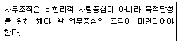
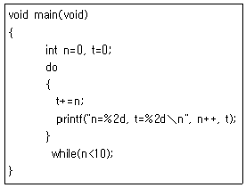
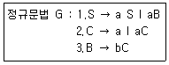

사무자동화산업기사 (2019-04-27 기출문제)
1과목: 사무자동화 시스템
1. 그룹웨어 시스템의 특징에 관한 사항으로 옳지 않은 것은?
- 공동 작업이나 공동 목표에 참여하는 다양한 작업 그룹을 지원한다.
- 신속하고 정확한 의사결정을 지원하는 시스템이다.
- 개인 작업만의 생산성 향상을 주목적으로 하고 있다.
- 클라이언트/서버 환경에서 구현된다.
(정답률: 90%)

2. 고선명(HD) 비디오를 위한 디지털 데이터를 저장할 수 있도록 소니가 주도한 광 기록방식의 저장매체는?
- DVD
- Blu-ray Disc
- HD-DVD
- CD
(정답률: 87%)
3. 방화벽, 침입탐지시스템, 가상사설망 등의 보안 솔루션을 하나로 모은 통합 보안 관리 시스템은?
- NAT
- VPN
- ESM
- IDS
(정답률: 52%)
4. 사무자동화 수행방식 중 하향식(top-down) 접근방식의 특징에 해당하는 것은?
- 경영자가 요구하는 최적의 시스템을 구축할 수 있는 방식이다.
- 기업의 최하위 단위부터 자동화하여 그 효과를 점차 증대시키는 방식이다.
- 점진적인 사무자동화의 추진으로 기본 조직에 거부 반응이 최소화된다.
- 시행착오가 빈번하여 전체적인 추진 시행에 어려움이 크다.
(정답률: 85%)
5. DBMS에서 사용자가 응용 프로그램을 통하여 저장된 데이터를 실질적으로 SELECT, UPDATE 등의 질의어를 사용하여 처리하는 언어의 개념은?
- 데이터 독립어
- 데이터 정의어
- 데이터 조작어
- 데이터 제어어
(정답률: 67%)
6. 일정한 전압을 유지시켜 주면서 순간 정전(Power Failure)에 대비하여 배터리 장치를 갖추어 정전이 되어도 일정 시간동안 전압을 보내주는 장치는?
- AVR
- ADAPTER
- MODEM
- UPS
(정답률: 72%)
7. 집중처리 시스템의 과도한 처리집중에 따른 문제점이 아닌 것은?
- 통신관리상의 문제점
- 운용상의 문제점
- 시스템 사용상의 문제점
- 사용자 응용 업무 개발시 문제점
(정답률: 48%)
8. 다음 중 EDI 국제표준은?
- UN/EDIFACT
- TDCC
- UCS
- WINS
(정답률: 84%)
9. 자기 디스크의 구성요소에 대한 설명으로 가장 거리가 먼 것은?
- 트랙은 회전축을 중심으로 데이터가 기록되는 동심원이다.
- 실린더는 여러 장의 디스크판에서 같은 위치에 있는 트랙의 모임으로 트랙의 수와 실린더의 수는 동일하다.
- Search Time은 읽기/쓰기 헤드가 지정된 트랙에 도달하는 데 걸리는 시간이다.
- Transmission Time은 읽은 데이터를 주기억장치로 보내는 데 걸리는 시간이다.
(정답률: 70%)
10. 인터넷을 통한 전자상거래(EC)의 효과로 옳지 않은 것은?
- 잠재고객의 확보와 물리적 제약 극복
- 소비자의 다양한 정보와 선택의 다양화
- 완벽한 기밀성과 익명성의 보장
- 구매자의 비용절감
(정답률: 84%)
11. 다음 중 인텔리전트 빌딩에서 요구되는 기본적인 기능과 가장 거리가 먼 것은?
- 정보통신 기능
- 생산관리 기능
- 정보처리 기능
- 빌딩자동화 기능
(정답률: 62%)
12. 다음 중 3단계 스키마에 속하지 않는 것은?
- 외부 스키마
- 관계 스키마
- 내부 스키마
- 개념 스키마
(정답률: 81%)
13. 기억기능을 가진 반도체들을 여러 개 묶어서 HDD처럼 사용할 수 있도록 개발된 제품으로 HDD에 비해 액세스 시간이 빠른 저장장치는?
- ODD
- SATA
- SSD
- SCSI
(정답률: 91%)
14. 다음 중 화상 미디어의 압축관련 기술이 아닌 것은?
- MPEG
- WAV
- H.261
- JPEG
(정답률: 60%)
15. 그래픽 정보는 점, 선, 원, 다각형과 같은 기하학 요소의 조합으로 표시하는 비디오텍스 방식은?
- 알파 모자이크 방식
- 알파 지오메트릭 방식
- 알파 포토그래픽 방식
- 알파 블렌딩 방식
(정답률: 77%)
16. 통신판매중개자가 자신의 정보처리시스템을 통하여 처리한 기록 중 소비자의 불만 또는 분쟁처리에 관한 기록의 보존 기준은?
- 6개월
- 1년
- 3년
- 5년
(정답률: 79%)
17. 문자나 그림, 설계도면을 읽어 디지털 신호로 변환시켜 컴퓨터 내부로 입력하는 장치로서 tablet과 stylus pen으로 구성된 장치는?
- CRT(Cathode Ray Tube)
- 디지타이저(digitizer)
- 도트 매트릭스 프린터(dot matrox printer)
- LCD(Liquid Crystal Display)
(정답률: 81%)
18. 주로 중간관리자와 지식노동자에게 복잡하고 일상적이지 않은 결정들에 대한 컴퓨터 기반 지원을 제공하는 시스템은?
- 비즈니스인텔리전스
- 관리정보시스템
- 임원대시보드
- 전자적자원관리시스템
(정답률: 67%)
19. 사무자동화의 배경 요인 중 사회적 요인에 가장 거리가 먼 것은?
- 정보화 사회의 출현으로 사무실에서 처리해야 할 정보의 양이 증가하였다.
- 단순 노동보다는 지적 노동이 부각화 되었다.
- 생산부문의 합리화, 자동화에 부응하여 오피스에 대한 관심의 증가로 인해 기업 구조가 변화하였다.
- 이미지, 소리, 그래픽과 같은 멀티미디어 기술의 등장으로 다양한 형태의 정보처리가 가능하게 되었다.
(정답률: 74%)
20. 컴퓨터가 명령을 입력받을 준비가 되어있음을 사용자에게 알리는 신호를 의미하는 것은?
- Access
- Inquiry
- Prompt
- Advance
(정답률: 69%)
2과목: 사무경영관리 개론
21. 사무량 측정 방법 중 기록 양식과 기입 방법만 정확하게 관리된다면 매우 우수한 측정 방법에 해당하는 것은?
- 표준시간 자료법
- 워크샘플링법
- 시간 연구법
- 실적 기록법
(정답률: 69%)
22. 과학적 사무관리의 목표로 가장 거리가 먼 것은?
- 인원의 감축
- 생산성 증대
- 사무작업의 능률 향상
- 사무비용의 절감
(정답률: 83%)
23. 다음 중 전산망의 효과가 아닌 것은?
- 신뢰성 향상
- 경제적 효과
- 처리 능력 향상
- 프로토콜의 단순화
(정답률: 82%)
24. 사무실내의 책상배치 방식 중 점유면적이 적으며 직무상 의사소통이 원활한 배치방식은?
- 대향식 배열
- 동향식 배열
- 좌우 대칭식 배열
- S자형 배열
(정답률: 73%)
25. 다음 중 MIS(경영정보시스템)에 대한 설명으로 가장 거리가 먼 것은?
- MIS는 기업의 전략, 계획, 조정, 관리, 운영 등의 결정을 보조하는 특징을 갖고 있다.
- MIS는 창조적이고 지적인 공학적 설계와 관계없이 단순 프로그래밍을 통한 업무전산화를 말한다.
- MIS의 전문성은 기업의 업무를 분석하고 기업경영을 진단하는 능력이다.
- MIS는 분석과 진단에 의해 기업업무의 정보요구가 정의되어야 하고, 정의된 정보를 효율적으로 처리할 수 있는 시스템을 개발하고 관리하는 특징을 갖고 있다.
(정답률: 80%)
26. 해킹, 컴퓨터바이러스, 논리폭탄, 메일폭탄, 서비스 거부 또는 고출력 전자기파 등의 방법으로 정보통신망 또는 이와 관련된 정보시스템을 공격하는 행위를 하여 발생한 사태를 의미하는 것은?
- 보안규정
- 침해사고
- 즉시복구
- 침해예방
(정답률: 86%)
27. 경영 기능별 경영정보시스템에 해당되지 않는 것은?
- 생산정보시스템
- 마케팅정보시스템
- 인사정보시스템
- 거래처리시스템
(정답률: 59%)
28. 정신적, 육체적 난이도를 평가하여 각종 직무 간 상대적 서열을 결정하는 절차는?
- 직무분석
- 인사고과
- 인사관리
- 직무평가
(정답률: 71%)
29. 거래 상대방의 응용 시스템들이 질의와 응답으로 구성된 두 개 이상의 짧은 메시지를 한 번의 접속 상태에서 주고받는 EDO 방식은?
- 참여형 EDI
- 대화형 EDI
- 일괄 처리형 EDI
- 즉시 응답형 EDI
(정답률: 75%)
30. 반복성의 유무에 의한 사무의 분류 중 거의 매일 똑같이 반복해서 발생하는 사무는?
- 본래사무
- 상례사무
- 지원사무
- 예외사무
(정답률: 71%)
31. EDI에 관한 설명으로 가장 옳지 않은 것은?
- UN/ECE는 표준 형식 및 표준 메시지 개발과 등록을 책임진다.
- EDIFACT는 행정기관, 상업, 운송업체 간의 전자적 데이터 교환을 위해 만든 국제 연합규칙이다.
- ISO는 구분과 데이터 요소 목록의 개발을 책임진다.
- EDI표준은 크게 저장 표준과 통신 표준으로 나눌 수 있다.
(정답률: 58%)
32. 다음이 설명하는 원칙은?

- 위양의 원칙
- 통솔범위의 원칙
- 전문화의 원칙
- 기능화의 원칙
(정답률: 71%)
33. 사무통제의 방법 중 조사ㆍ검사ㆍ조회 혹은 평가 등을 말하는 것으로 무질서하게 행해지는 산발적인 체크 정도나 일정한 규칙에 기초한 표본 조사는?
- 감사
- 집중화
- 예산
- 절차
(정답률: 85%)
34. 자료관리에 대한 설명으로 적합하지 않은 것은?
- 각종 공문서만을 효율적으로 보존하는 것이다.
- 필요한 자료를 계획적으로 수집, 분류하는 것이다.
- 자료를 필요로 하는 곳에 신속하게 전달하는 것이다.
- 자료의 대출, 전시, 복사, 번역 서비스 등을 행하는 것이다.
(정답률: 81%)
35. 전산망의 내부 또는 전산망 기기 상호 간의 통신을 확보할 수 있는 논리적 계측 구조의 집합체는?
- 전산기구조
- 통신규약
- 이용약관
- 접속허가
(정답률: 79%)
36. 사무간소화의 의미를 가장 잘 설명한 것은?
- 사무시간의 양적 축소를 의미한다.
- 사무의 내용, 방법, 절차 등을 감소시키는 것을 뜻한다.
- 사무자동화기기의 축소를 뜻한다.
- 사무를 수행하는 인원의 감축을 의미한다.
(정답률: 77%)
37. 사무조직화의 일반 원칙에 가장 부합하지 않은 것은?
- 명령계통의 다원화
- 합리적인 책임 할당
- 권한의 위임
- 통솔범위의 정화
(정답률: 72%)
38. 행정업무의 효율적 운영에 관한 규정에서 결재 받은 문서를 수정하는 방법으로 옳은 것은?
- 흰색 수정펜을 사용하여 수정하고 기입한 후 수정한 사람 본인이 서명 날인한다.
- 원안의 글자를 식별할 수 있도록 해당 글자의 중앙에 가로로 두 선을 그어 삭제하거나 수정하고 수정행위를 한 사람이 서명 날인한다.
- 원안의 글자를 식별할 수 있도록 해당 글자의 중앙에 가로로 한 줄을 그어 삭제하거나 수정하고 부서장이 서명 날인한다.
- 흰색 수정펜을 사용하여 수정하고 기입한 후 부서장이 서명 날인한다.
(정답률: 81%)
39. 정보관리를 수행하기 위해 필요한 기본적인 요건을 결정하는 것으로 의사결정자가 요구하는 정보의 확정, 사무량 및 처리 방침을 결정하는 기능은?
- 정보통제
- 정보처리
- 정보제공
- 정보계획
(정답률: 58%)
40. 자료보관기기를 옳게 나열한 것은?
- 마이크로필름, 디스켓, 디스크
- 하이퍼미디어, 테이프, 팩시밀리
- 패키지, 레이저프린터, 워드프로세서
- 브라우저, 모뎀, 인터넷
(정답률: 87%)
3과목: 프로그래밍 일반
41. 주기억장치 배치 전략에서 입력된 프로그램을 수용할 수 있는 공간 중 가장 큰 공백에 할당하는 전략은?
- Large-Fit
- Worst-Fit
- Best-Fit
- First-Fit
(정답률: 80%)
42. Java에서 하위클래스에서 상위클래스를 참조하기 위해 사용하는 명령어는?
- extends
- static
- super
- method
(정답률: 66%)
43. 세마포어(Semaphore)에서 지원하지 않는 연산은?
- initialize
- decrement
- construct
- increment
(정답률: 61%)
44. 프로그래밍 언어의 해독 순서로 옳은 것은?
- 컴파일러→로더→링커
- 로더→링커→컴파일러
- 링커→컴파일러→로더
- 컴파일러→링커→로더
(정답률: 77%)
45. 운영체제의 성능 평가요소로 거리가 먼 것은?
- 반환시간
- 신뢰도
- 비용
- 처리 능력
(정답률: 80%)
46. 로더의 기능 중 실행 프로그램을 실행시키기 위해 기억장치 내에 옮겨 놓을 공간을 확보하는 기능은?
- 연결
- 재배치
- 적재
- 할당
(정답률: 78%)
47. 다중 프로그래밍 시스템이나 가상기억장치를 사용하는 시스템에서 너무 자주 페이지 교체가 일어나서 시스템의 심각한 성능저하를 초래하는 현상을 무엇이라고 하는가?
- interrupt
- deadlock
- thrashing
- working set
(정답률: 79%)
48. C 언어에서 사용하는 기억클래스에 해당하지 않는 것은?
- static
- register
- internal
- auto
(정답률: 58%)
49. C 언어에서 정수형 변수를 선언할 때 사용하는 것은?
- char
- int
- float
- double
(정답률: 78%)
50. 동적 바인딩에 해당하지 않는 것은?
- 프로그램 호출 시간
- 언어 정의 시간
- 실행 시간 중 객체 사용 시점
- 모듈의 기동 시간
(정답률: 57%)
51. C++ 객체지형 프로그래밍에서 method의 사용예시를 가장 옳게 표현한 것은?
- mYClass. CountNumber();
- mYClass: CountNumber();
- mYClass-＞CountNumber();
- Void CountNumber();
(정답률: 57%)
52. (A+B) * (C-D)를 전위(Prefix) 표기법으로 변환한 것은?
- AB+CD-*
- *+AB-CD
- +*-ABCD
- +-AB*CD
(정답률: 71%)
53. 고급 언어로 작성된 프로그램을 구문분석 하여 파서에 의하여 생성되는 결과물로 각각의 문장을 문법구조에 따라 트리 형태로 구성한 것은?
- 구조 트리
- 어휘 트리
- 파스 트리
- 중간 트리
(정답률: 78%)
54. 프로그래밍 언어에서 수명 시간 동안 고정된 하나의 값과 이름을 가진 자료로서 프로그램이 동작하는 동안 값이 절대로 바뀌지 않는 것을 의미하는 것은?
- constant
- variable
- reserved work
- annotation
(정답률: 73%)
55. BNF 표기법 기호 중 “정의된다”를 의미하는 것은?
- ::=
- I
- ＜＞
- {}
(정답률: 86%)
56. 어휘 분석의 주된 역할을 원시 프로그램을 하나의 긴 스트링으로 보고 원시 프로그램을 문자 단위로 스캐닝하여 문법적으로 의미 있는 일련의 문자들로 분할해 내는 것을 말한다. 이 때 분할된 문법적인 단위를 무엇이라고 하는가?
- 토큰
- 오토마타
- BNF
- 모듈
(정답률: 84%)
57. 다음 C프로그램에서 최종적으로 출력되는 n, t의 값을 순서대로 나열하면?

- 10, 55
- 9, 45
- 10, 45
- 9, 55
(정답률: 60%)
58. 원시 프로그램을 컴파일러가 수행되고 있는 컴퓨터의 기계어로 번역하는 것이 아니라 다른 기종에 맞는 기계어로 번역하는 것은?
- Cross Compiler
- Preprocessor
- Linker
- Debugger
(정답률: 80%)
59. 객체지향 기법에서 객체가 메시지를 받아 실행해야 할 구체적인 연산을 정의한 것은?
- 클래스
- 속성
- 메소드
- 인스턴스
(정답률: 73%)
60. 아래의 정규 문법으로 생성되는 문장은?

- aaab
- abc
- abaa
- baba
(정답률: 71%)
4과목: 정보통신 개론
61. UDP 프로토콜에 대한 설명으로 틀린 것은?
- 비연결형 전송
- 적은 오버헤드
- 빠른 전송
- 신뢰성 있는 데이터 전송 보장
(정답률: 44%)
62. 점대점 링크를 통하여 인터넷 접속에 사용되는 IEFT의 표준 프로토콜은?
- HDIC
- LLC
- SLIP
- PPP
(정답률: 66%)
63. 반송파로 사용되는 정현파의 진폭에 정보를 싣는 변조 방식은?
- ASK
- FSK
- PSK
- WDPCM
(정답률: 57%)
64. 변조속도가 1600(Baud)이고 트리비트(Tribit)를 사용하는 경우 전송속도(bps)는?
- 800
- 1600
- 4800
- 12800
(정답률: 82%)
65. ATM 셀의 헤더 크기는 몇 [byte]인가?
- 2
- 5
- 48
- 53
(정답률: 74%)
66. 패킷 교환 방식에 대한 설명으로 틀린 것은?(오류 신고가 접수된 문제입니다. 반드시 정답과 해설을 확인하시기 바랍니다.)
- 메시지 교환 방식과 같이 축적 교환 방식의 일종이다.
- 트래픽 용량이 적은 경우에 유리하다.
- 전송할 수 있는 패킷의 길이가 제한되어 있다.
- 데이터그램과 가상회선방식이 있다.
(정답률: 49%)
67. 라우팅 프로토콜 중 Distance vector 방식이 아닌 것은?
- RIP
- BGP
- EIGRP
- OSPF
(정답률: 63%)
68. 한 문자가 전송될 때마다 스타트(start) 비트와 스톱(stop) 비트를 전송하는 방식은?
- 비트제어방식
- 동기방식
- 비동기방식
- 다중화방식
(정답률: 63%)
69. 8진 PSK 변조를 사용하는 모뎀의 데이터 전송속도가 4800bps일 때 변조속도(baud)는?
- 600
- 1600
- 2400
- 4800
(정답률: 72%)
70. HDLC에서 사용되는 프레임의 종류에 해당하지 않는 것은?
- 정보 프레임
- 감독 프레임
- 무번호 프레임
- 제어 프레임
(정답률: 39%)
71. 무선 네트워크 기술인 블루투스(Bluetooth)에 대한 표준규격은?
- IEEE 801.9
- IEEE 802.15.1
- IEEE 802.10
- IEEE 809.5.1
(정답률: 66%)
72. 아날로그 데이터를 디지털 신호로 변환하는 PCM 방식의 진행 순서로 옳은 것은?
- 표본화→부호화→양자화→여과→복호화
- 표본화→양자화→부호화→복호화→여과
- 표본화→부호화→양자화→복호화→여과
- 표본화→양자화→여과→부호화→복호화
(정답률: 79%)
73. 전송하려는 부호어들의 최소 해밍 거리가 7일 때, 수신시 정정할 수 있는 최대 오류의 수는?
- 1
- 2
- 3
- 4
(정답률: 67%)
74. 송신측에서 1개의 프레임을 전송한 후 수신측에서 오류의 발생을 점검하여 ACK또는 NAK 신호를 보내올 때까지 대기하는 방식은?
- 선택적 ARQ
- 적응적 ARQ
- 연속적 ARQ
- 정지&대기 ARQ
(정답률: 78%)
75. LAN 토폴로지 형태로 적절하지 않은 것은?
- star 형
- bus 형
- ring 형
- square 형
(정답률: 85%)
76. 광섬유 케이블에서 클래딩(Cladding)의 주 역할은?
- 광신호를 전반사
- 광신호를 회절
- 광신호를 흡수
- 광신호를 전송
(정답률: 75%)
77. HDLC 프레임 구조에 포함되지 않는 것은?
- 플래그(Flag) 필드
- 제어(Control) 필드
- 주소(Address) 필드
- 시작(Start) 필드
(정답률: 75%)
78. 데이터그램(datagram)방식에 대한 설명 중 맞는 것은?
- 수신지의 마지막노드에서는 송신지에서 송신한 순서로 패킷이 도착한다.
- 모든 패킷은 설정된 경로에 따라 전송된다.
- 미리 설정된 경로상의 각 노드는 패킷에 대한 경로를 알고 있으므로 경로설정과 관련된 결정을 수행할 필요가 없다.
- 네트워크 운용에 있어서 보다 높은 유연성을 제공한다.
(정답률: 46%)
79. 8진 PSK에서 반송파간의 위상차는?
- π
- π/2
- π/4
- π/8
(정답률: 59%)
80. 펄스변조에서 아날로그 정보신호의 크기에 따라 펄스 반송파의 폭을 변화시키는 변조 방식은?
- PWM
- AM
- PPM
- PCM
(정답률: 44%)